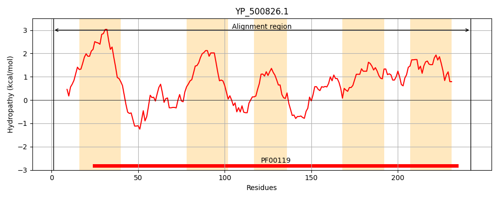
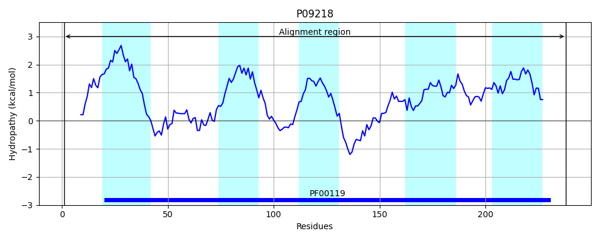
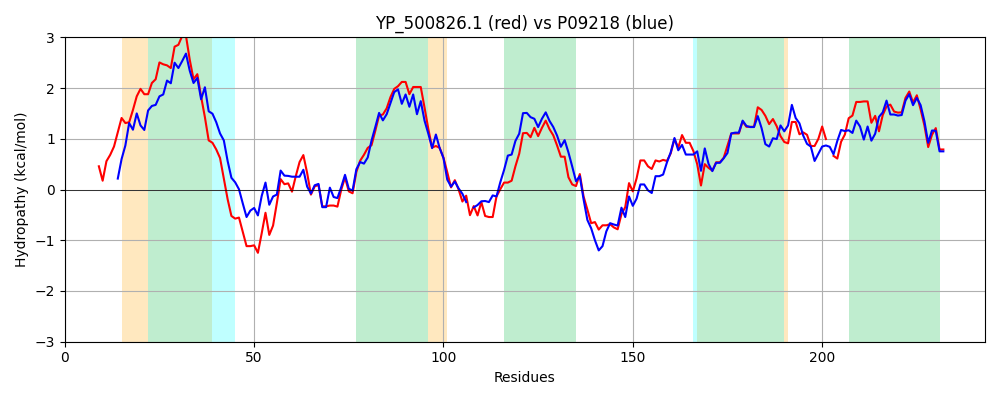

Hit Accession: P09218
Hit TCID: 3.A.2.1.14
Hit Description: gnl|BL_ORD_ID|8501 gnl|TC-DB|P09218|3.A.2.1.14 ATP synthase subunit a OS=Bacillus sp. (strain PS3) OX=2334 GN=atpB PE=1 SV=1
Mach Len: 243
e:0.000000
Query TMS Count : 5
Hit TMS Count: 5
TMS-Overlap Score: 4.650000
Predicted Substrates:CHEBI:5584;hydron
BLAST Alignment:
Score: 714 , Bit scores: 279 bits, E-value: 1.1e-95, Alignment length: 243, Percentage identity: 57
Query: 1 MDHKSPLVSWNLFGFDIVFNLSSILMILVTAFLVFLLAIICTRNLKKRPTGKQNFVEWIFDFVRGIIEGNMAWKKGGQFHFLAVTLILYIFIANMLGLPFSIVTKDHTLWWKSPTADATVTLTLSTTIILLTHFYGIKMRGTKQYLKGYVQPFWPLAIINVFEEFTSTLTLGLRLYGNIFAGEILLTLLAGLFFNEPAWGWI-ISIPGLIVWQAFSIFVGTIQAYIFIMLSMVYMSHKVADEH 242
M+HK+PLV + + FNLS +LMI +T +VF++A+ TR+L+ RPTG QNF+EW+FDFVRGII M W+ GG+F L VTLI+Y+F+ANMLGLPFS+ LWWKSPTADATVTLTL+ ++ LTH+YG+KM+G YL+ Y +P L + + EEF +TLTLGLRL+GNI+AGEILL LLA L + G + S ++VWQAFSIFVGTIQA+IF ML+MVYM+HKV+ +H
Sbjct: 1 MEHKAPLVEF----LGLTFNLSDMLMITITCLIVFIIAVAATRSLQLRPTGMQNFMEWVFDFVRGIINSTMDWQTGGRFLTLGVTLIMYVFVANMLGLPFSVHVNGE-LWWKSPTADATVTLTLAVMVVALTHYYGVKMKGASDYLRDYTRPVAWLFPLKIIEEFANTLTLGLRLFGNIYAGEILLGLLASLGTHYGVLGAVGASQFPIMVWQAFSIFVGTIQAFIFTMLTMVYMAHKVSHDH 238 | Protein Hydropathy Plots: |
|---|
|  |  |
Pairwise Alignment-Hydropathy Plot:
|
|---|
|  |